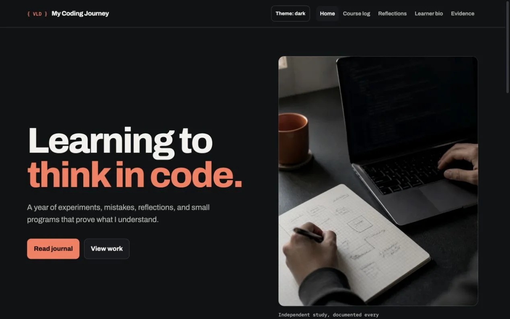

This VLD website
I am using HTML, CSS, Git, and GitHub Pages to build and maintain the site that documents my learning.
The first version taught me how page structure, shared styling, navigation, and responsive layouts fit together.
Projects, screenshots, certificates, and explanations that show what I can now do.

I am using HTML, CSS, Git, and GitHub Pages to build and maintain the site that documents my learning.
The first version taught me how page structure, shared styling, navigation, and responsive layouts fit together.
Add a safe screenshot, certificate, code sample, or live demonstration.
Connect the work to specific knowledge and skills.
Identify a challenge, your response, and what you would improve.